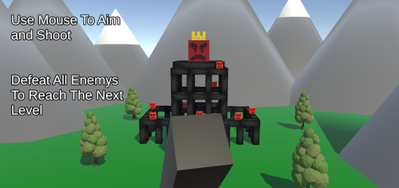
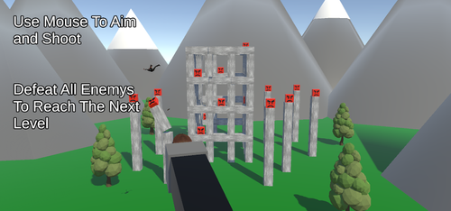
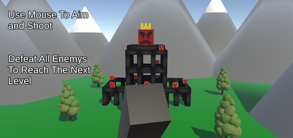
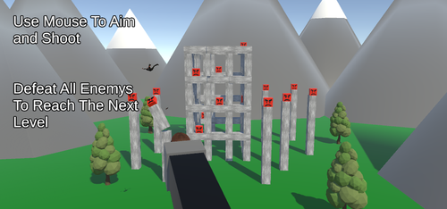

Launch Em
Platform: PC
Team Size: 1
Project Duration: 3 months
Engine & Tools: Unity, Photoshop, YouTube, Google Docs
Platform: PC
Team Size: 1
Project Duration: 3 months
Engine & Tools: Unity, Photoshop, YouTube, Google Docs

Launch Em is a 3D physics-based game developed as part of a university rapid game design module, where a new game had to be created each week over a 5-week period. This game draws inspiration from Angry Birds and incorporates rag-doll physics, allowing players to fire rag-dolling people at enemies perched on structures. The objective is to knock enemies off using strategic launches to cause maximum destruction.
Launch Em is a 3D physics-based game where players fire rag-dolling characters at enemies perched on destructible structures. Drawing inspiration from Angry Birds, the gameplay revolves around mastering the physics of each shot, as players control the force and trajectory of their launches to maximize destruction. I developed the entire physics system, ensuring realistic rag-doll mechanics that add a layer of unpredictability and challenge. Each level introduces increasing difficulty, requiring players to strategically plan their shots with limited ammunition to knock enemies off their platforms. The combination of skillful aiming and understanding of physics mechanics creates a dynamic, engaging experience that tests both strategy and precision.
Solely responsible for the entire development process, including concept creation, coding, and designing gameplay mechanics. The project was completed in one week, requiring rapid prototyping, testing, and iteration.
Physics-Based Mechanics:Designed and implemented all physics-based interactions in Unity, ensuring the rag-doll mechanics were realistic and engaging. Programmed the launch system to give players control over the force and direction of their shots, creating a dynamic and fun challenge.
Gameplay & Level Design:Developed multiple levels with increasing difficulty, requiring players to carefully plan their shots to maximize destruction. The challenge lies in knocking enemies off structures with limited ammunition, demanding both skill and strategy.
Developed multiple levels with increasing difficulty, requiring players to carefully plan their shots to maximize destruction. The challenge lies in knocking enemies off structures with limited ammunition, demanding both skill and strategy.
Self-Directed Project Management:Independently managed the project under tight time constraints, balancing creative ideas with practical execution. Completed the project within the one-week deadline, adhering to the rapid game design module's requirements.
I designed simple and straightforward models for the enemies, prioritizing clarity and distinctiveness within the limited development time. While the models are basic, they effectively communicate their role as targets for the player. Once all enemies have been knocked to the ground, the player progresses to the next level, maintaining a clear sense of objective and accomplishment.
The player controls a cannon that fires one character every second, with each character fully rigged to enable rag-doll physics, aligning with the project’s physics-based theme. Due to the tight timeline of the week-long development, I sourced the character models from the Unity 3D Asset Store, allowing me to focus on implementing the physics mechanics rather than modeling and rigging custom assets.
The puzzles in Where Am I gradually increase in complexity, evolving from simple tasks such as placing a cube on a pressure pad to solving intricate, multi-step challenges required to escape a single room. Each puzzle is carefully designed to engage players, encouraging them to think critically about their next move and strategically plan their actions to progress through the game.

 


